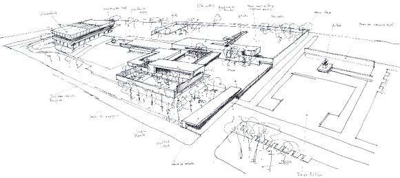
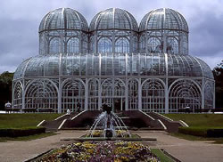

A Beleza da Simplicidade
O video promocional «Portugal The Beauty of Simplicity» foi lançado para promover Portugal em 2015 com o tema "Europe's West Cost" (Costa Oeste da Europa) pelo Turismo de Portugal.
EMBAIXADA DE PORTUGAL
em BRASÍLIA
O video promocional «Portugal The Beauty of Simplicity» foi lançado para promover Portugal em 2015 com o tema "Europe's West Cost" (Costa Oeste da Europa) pelo Turismo de Portugal.
O VI Comité Inter-Governamental da UNESCO que vai analisar a candidatura do Fado a Património Imaterial da Humanidade começa hoje, em Bali, na Indonésia, e decorre até ao próximo dia 29. Presidido pelo embaixador da Indonésia junto da UNESCO, Aman Wirakartakusumah, o comité é constituído por 24 países, entre eles, Espanha, Quénia, Japão e Venezuela.
A delegação portuguesa chega esta quinta-feira a Bali, sendo composta pelo presidente cessante da Comissão Nacional da UNESCO, embaixador Fernando Andresen Guimarães, o presidente da Comissão Científica da candidatura, Rui Vieira Nery, a directora do Museu do Fado, Sara Pereira, e ainda o presidente da Câmara Municipal de Lisboa, António Costa e a vereadora da Cultura, Catarina Vaz Pinto. Os 24 delegados devem analisar um total de 49 candidaturas para inscrição na lista do Património Imaterial da Humanidade, entre as quais o Fado.
A maioria pensa com a sensibilidade, eu sinto com o pensamento. Para o homem vulgar, sentir é viver e pensar é saber viver. Para mim, pensar é viver e sentir não é mais que o alimento de pensar.
A arquitectura, o encontro de igrejas medievais com edifícios icónicos e futurísticos, o vinho do Porto, as margens do Douro. São algumas das atracções, aponta o TripAdvisor, que mais convencerão os viajantes e que os terá levado a valorizar positivamente o Porto, elevando-o ao 2.º posto do top de destinos "on the rise" deste megaportal turístico – que se anuncia como o maior do mundo, com mais de 260 milhões de visitantes únicos mensais e mais de 125 milhões de opiniões inseridas, segundo dados da empresa.
Bem-vindo ao sítio na Internet da Embaixada de Portugal no Brasil.
Ao assumir, com grande satisfação, as funções de Embaixador de Portugal neste magnífico e imenso país, gostaria de a todos saudar e dar as boas vindas a esta página eletrónica (site) da Embaixada.
As relações entre Portugal e Brasil vivem um excelente momento, do ponto vista político, económico, social e cultural, assente num vasto e crescente número de interesses comuns e numa multiplicidade de iniciativas e ações conjuntas, que se pretende aumentar e melhorar.
Existe, obviamente, ainda margem para, desejavelmente, se intensificar o nosso relacionamento, nomeadamente ao nível económico, volume de trocas comerciais, investimentos e parcerias recíprocas, mutuamente vantajosos.
A ligação, aos mais diversos níveis e nas mais variadas áreas, entre os nossos dois Povos, a dinâmica das respetivas sociedades civis, o acrescido fluxo de deslocações e movimento de cidadãos portugueses e brasileiros, em Portugal e no Brasil, a projeção internacional da nossa língua e os fraternais laços e afetos que, de há muito e cada vez mais, nos unem, constituem, sem dúvida, um dos mais mais importantes ativos do nosso intenso e ímpar relacionamento bilateral.
A celebração conjunta, de 7 de setembro deste ano a 10 de Junho de 2013, do“Ano de Portugal no Brasil e do Brasil em Portugal”, constituirá igualmente uma oportunidade para, além da reafirmação dos aspetos culturais que nos identificam e aproximam, reciprocamente, também melhor podermos dar a conhecer aspetos do que de mais moderno e tecnologicamente avançado atualmente se faz em Portugal e no Brasil.
Uma palavra também de profundo apreço e reconhecimento pelo papel da significativa e relevante Comunidade de origem Portuguesa que vive e trabalha no Brasil, muito contribuindo, com o seu esforço, dedicação e sucesso, para a elevação e pretendida dignificação aqui do nosso país.
Nestes tempos exigentes, tudo deveremos fazer em prol da afirmação, crescimento e desenvolvimento sustentado de Portugal. Desde já reafirmo o empenho desta Missão e de todos os seus colaboradores na prossecução daqueles objetivos.
Esta Embaixada, bem como todos os demais Consulados-Gerais, Consulados, Vice-Consulados e Consulados Honorários de Portugal, por todo o Brasil, estão, naturalmente, à vossa inteira disposição.
É minha firme intenção trabalhar convosco para, em conjunto, prestigiarmos o nome de Portugal neste grande país, ao qual estamos tão profunda e intimamente ligados.
É objetivo deste site, para além da informação prestada, colocar ao dispor dos interessados um instrumento, que se pretende simplificado e cada vez mais útil, na perspetiva do utilizador, oferecendo diversas valências e plataformas de dados, com permanentemente atualização de conteúdos.
Através desta página na Internet, a Embaixada de Portugal pretende, igualmente acolher pertinentes sugestões e comentários, com o intuito de procurar sempre a melhoria da qualidade dos serviços públicos que presta.
Francisco Ribeiro Telles
Embaixador de Portugal
A residência da Embaixada de Portugal será construída no sector Embaixadas Sul, em Brasília, no lote que pertence a Portugal. O projecto conta com quatro elementos construídos em redor de um pátio interior. As áreas principais situam-se nas alas Norte e Sul. As alas Este e Oeste destinam-se a serviços técnicos e aos acessos. Todo o edifício se encontra elevado acima do nível do solo, apoiando-se em pilares afastados entre si 10 e 15 metros.
Estes vãos requerem a utilização de lajes pré-esforçadas. As áreas secundárias também se situam ao mesmo nível, e vencem, sem qualquer apoio intermédio, o vão de 45 metros que separa os corpos principais, apoiando-se nestes.

Av. Álvares Cabral, 1366, 9º andar - Lourdes
30170-001 Belo Horizonte - MG
Cônsul: André Sopas Bandeira
Telefone: (31) 3291 8192
Fax: (31) 3291 8064
E-mail: mail@cnbel.dgaccp.pt
Sítio Internet: www.secomunidades.pt/web/belohorizonte
Horário de atendimento: 2ª a 6ª feira das 8:00 às 13:00 horas
SES – Av. das Nações, Quadra 801, Lote 02
70402-900 Brasília - DF
Encarregada da Secção Consular: Gonçalo Ferraz de Lima Sanchez da Motta
Telefones: (61) 3032 9600
Fax: (61) 3032 9627
E-mail: mail@brasilia.dgaccp.pt
Horário de atendimento: 2ª a 6ª feira, das 8:30 às 13:00 horas
Nota: Agendamentos para Cartão do Cidadão, Passaporte e vistos devem ser efectuados através do endereço de correio electrónico: mail@brasilia.dgaccp.pt
Rua Visconde do Rio Branco, 1358, 20ª andar, Centro
Curitiba - PR
CEP 80420-210

Vice-Cônsul: Rogério dos Santos Vieira
Telefone: (41) 3233 4211
E-mail: mail@curitiba.dgaccp.pt
Sítio Internet: www.secomunidades.pt/web/curitiba
Horário de atendimento: De 2ª feira a 5ª feira das 9h30 às 13h30. Às 6ª feiras das 8h00 12h00 ( a partir dessa hora por e-mail ou fax )
Rua Prof. Annes Dias, 112, 10º andar
90020-090 Porto Alegre - RS
Telefone: (51) 3061 5767
Fax: (51) 3228 0087
E-mail: mail@cnpal.dgaccp.pt
Sítio Internet: www.secomunidades.pt/web/portoalegre
Horário de atendimento ao publico presencial: de 2ª a 6ª feira das 10h00 às 13h00
Horário de atendimento ao publico por telefone, fax, email: de 2ª a 6ª feira das 10h00 às 16h00.
Av. Engº Domingos Ferreira, 4060 - 6º andar - Boa Viagem
51021-040 Recife - PE
Vice-Cônsul: Adriano José da Fonte Moutinho
Telefone: (81) 3327 1514
Fax: (81) 3327 1514
Telemóvel de Emergência: (81) 9974 6894
E-mail: mail@cnrec.dgaccp.pt
Sítio Internet: www.secomunidades.pt/web/recife
Horário de atendimento: das 8:00 às 13:00 horas
Edifício Metropolitan Empresarial
Rua Desembargador Leite Albuquerque 635 Sala 402
CEP 60150-150
Fortaleza Ceará Brasil
Vice-Cônsul: Francisco Neto Brandão
Telefone: (85) 3261 7420 Fax: (85) 3261 7421
Telemóvel de Emergência: (85) 8867 9850
E-mail: fortaleza@mne.pt
Sítio Internet: www.secomunidades.pt/web/fortaleza
Horário de atendimento: De 2ª a 6ª feira das 8:30 às 12:30 horas
Av. Marechal Câmara, 160 - Sala 1809 - Ed. Orly
20020-080 Rio de Janeiro - RJ
Telefone: (21) 3509 1850
Fax: (21) 2544 3382 / 2544 3226 / 2511 2508
E-mail:mailconsulado@rio.dgaccp.pt
Sítio Internet: www.secomunidades.pt/web/riojaneiro
Horário de atendimento: De 2ª a 6ª, das 8:00 às 12:00 horas
Rua Canadá, 324 - Jardim América
01436-000 - São Paulo - SP
Cônsul Geral: Paulo Jorge Lopes Lourenço
Telefone: (11) 3084 1800
Fax: (11) 3085 5633
E-mail: duvidas@spaulo.dgaccp.pt
Sítio Internet: http://consuladoportugalsp.org.br/
Horário de atendimento: De 2ª a 6ª feria, das 09:00 às 17:00 horas
Avenida Tancredo Neves, nº 1632,
Edifício Salvador Trade Center, Torre Norte,
1º andar, Salas 109 a 113, Caminho das Árvores
Salvador - BA
41820-020
Cônsul Geral: José Manuel Lomba
Telefone: (71) 3341 0636 / 3341 1499
Fax: (71) 3341-2796
E-mail: mail@salvador.dgaccp.pt
Sitio Internet: www.secomunidades.pt/web/salvador
Horário de atendimento: De 2ª a 6ª feira, das 8:00 às 13:00 horas
Cônsul honorário: Abraão Freitas Valinhas
Endereço Postal
Rua dos Jenipapos, Qd. 22 - nº 15 - São Francisco
65076-490 - São Luiz - MA
Telefone / Fax: (98) 3235 4635
E-mail: consptslz@gmail.com
Horário de atendimento: de 2ª a 6ª feira de 8:00 às 14:00 horas
Cônsul honorário: Com. José dos Santos Silva Azevedo
Endereço Postal
Rua Ferreira Pena, 37 - Centro
69010-140 Manaus – AM
Telefone: (92) 3633 1577
e-mail: consulado.portugal.am@internext.com.br
Horário de atendimento: 2ª a 6ª, das 08:00 às 12:00 horas

1. Um cidadão brasileiro necessita de visto para ir de férias a Portugal?
Nos termos da legislação em vigor, os cidadãos brasileiros não necessitam de visto para entrar em Portugal, por um período de 90 dias, nos casos de:
Este prazo poderá ser prorrogado em Portugal mediante autorização do Serviço de Estrangeiros e Fronteiras, não podendo a prorrogação ultrapassar 90 dias.
Para qualquer outra situação é exigido visto aos cidadãos brasileiros.
Os cidadãos de outras nacionalidades devem contactar o Consulado de Portugal na sua área de residência para determinar da necessidade ou não de visto para entrar em Portugal.
2. Que documentos necessita um cidadão brasileiro para entrar em Portugal?
A isenção de visto não exime os seus beneficiários do cumprimento de algumas formalidades de entrada no país previstas na legislação em vigor (Decreto-Lei n° 34/2003, de 25 de Fevereiro, e Documento do Conselho da União Europeia n° 10479/02, de 17 de Julho, que aprova a Instrução Consular Comum no âmbito do Acordo Schengen).
Assim, à entrada em Portugal, torna-se necessária a apresentação às autoridades fronteiriças portuguesas:
NOTA:
A comprovação do valor diário (40 Euros, em dinheiro, “Travelers cheques”, ou cartões de crédito internacionalmente aceites) poderá ser dispensada, caso seja apresentada uma carta convite ou termo de responsabilidade emitido por cidadão português ou por estrangeiro habilitado com título de residência, autorização de permanência, visto de trabalho, estudo, estada temporária, válidos, que garanta a alimentação e o alojamento do interessado durante a sua estada, sem prejuízo da possibilidade de recurso a outros meios de prova.
3. Que tipos de Vistos existem?
Podem ser concedidos pelos postos consulares portugueses os seguintes tipos de vistos:
Uniformes (previstos no Acordo Schengen para cidadãos de nacionalidades não dispensadas de visto)
IMPORTANTE
Todos os pedidos de vistos devem ser instruídos pessoalmente pelo interessado junto ao Consulado de Portugal na área de residência do interessado. Deverá ser apresentada prova de residência. Não são aceites pedidos de visto de estrangeiros que não tenham residência legal no país.
Documentação necessária comum a todos os vistos
Nota: Os menores de 16 anos estão isentos da apresentação dos documentos relativos ao registo criminal.
Eu______ (nome do cônjuge/ dos pais), ________ (estado civil), _______ (profissão, mencionando o local de trabalho), ______ portador do Bilhete de Identidade / da Autorização de Permanência n°_____, residente em_________ declaro, para os devidos efeitos, que me responsabilizo pelos meios de subsistência – alojamento, alimentação e assistência médica hospitalar – de minha esposa / marido / filho(a)______ (nome do requerente), de nacionalidade brasileira, titular do passaporte nº _______, o(a) qual vem residir comigo no endereço acima mencionado. Local, data e Assinatura do declarante.
1.1. O que é o cartão de cidadão?
O cartão de cidadão é o novo documento de identificação multifuncional dos cidadãos portugueses, em formato de smart card, com um chip de contacto integrado, que veio substituir os principais documentos de identificação actualmente existentes:
1.2. Quais as características do cartão de cidadão?
O cartão de cidadão permite a identificação visual e presencial de forma segura dos cidadãos portugueses, bem como a identificação e autenticação electrónica em actos informatizados, exibindo:
1.3. Quais as funcionalidades de identificação electrónica do cartão de cidadão?
O cartão de cidadão possibilita:
1.4. Onde pode ser solicitado o cartão de cidadão?
O cartão de cidadão poderá ser solicitado:
1.5. Quais os documentos necessários para solicitar o cartão de cidadão?
Sempre que possível, deverão ser apresentados bilhete de identidade e cartões de contribuinte, segurança social, utente do serviço nacional de saúde e de eleitor junto dos Serviços competentes.
1.6. Qual a validade do cartão de cidadão?
O cartão de cidadão é válido por 5 anos, no entanto, em algumas situações excepcionais, o prazo de validade poderá ser diferente.
1.7. Quanto custa o pedido de emissão do cartão de cidadão?
O passaporte electrónico português é um documento de viagem individual, que permite ao seu titular a entrada e saída do território nacional, bem como do território de outros Estados que o reconheçam para esse efeito.
Em território português, as taxas a cobrar relativamente ao passaporte são estabelecidas por portaria conjunta dos Ministros da Administração Interna e dos Negócios Estrangeiros e das Finanças e da Administração Pública.
No estrangeiro, as taxas devidas são as previstas na Tabela de Emolumentos Consulares.
Têm direito à titularidade de passaporte os cidadãos de nacionalidade portuguesa.
Só o próprio, presencialmente, pode requerer o passaporte
No caso de menores de 18 anos, cidadãos interditos ou inabilitados, o passaporte é requerido por quem exerce o poder paternal, a tutela ou a curatela.
1.3. Passaportes para menores
Os menores, quando não forem acompanhados por quem exerça o poder paternal, só podem entrar e sair de território nacional exibindo autorização para o efeito.
A autorização referida deve constar de documento escrito, datado e com a assinatura de quem exerce o poder paternal, legalmente certificada, conferindo poderes de acompanhamento por parte de terceiros, devidamente identificados.
A autorização pode ser utilizada ilimitadamente, dentro do prazo de validade que o documento mencionar, a qual, no entanto, não poderá exceder o período de um ano civil.
Se não for mencionado outro prazo, a autorização é válida por seis meses, contados a partir da respectiva data.
Documentos necessários:
1.4. Custo e prazos de entrega do Passaporte
O prazo normal é de seis dias úteis, contados da data do deferimento do pedido.
Em casos de urgência - a solicitação do titular - pode ser estabelecido prazo mais curto, sendo cobradas, adicionalmente, as respectivas taxas de urgência. Consulte o Portal do Cidadão para obter informação adicional.
1.5. Validade do Passaporte
1.6. Cancelamento e apreensão
O titular do passaporte perdido, destruído, furtado ou extraviado deve comunicar imediatamente tal facto à entidade emissora, para efeitos de cancelamento e apreensão.
Os representantes legais de menores e incapazes podem requerer à entidade emitente o cancelamento e a apreensão de passaporte emitido a favor daqueles.
As autoridades consulares, quando solicitadas a custear a repatriação de nacionais portadores de passaporte, farão a retenção deste, que apenas será restituído no destino após pagamento dos encargos suportados pelo Estado.
Na situação prevista no número anterior, o repatriado regressará a Portugal munido de passaporte temporário ou título de viagem única.
1.7. Concessão de segundo Passaporte
Em circunstâncias excepcionais, devidamente fundamentadas, poderá ser concedido um segundo passaporte, a indivíduo titular de outro ainda válido, quando, após cuidada apreciação da situação, se conclua que a sua emissão corresponde ao interesse nacional ou a um interesse legítimo do requerente, decorrente das relações entre Estados terceiros.
2. Passaporte Temporário
O passaporte temporário é o documento de viagem individual, que permite a circulação do respectivo titular de e para fora do território nacional, durante um período de tempo limitado.
O passaporte temporário deve ser substituído por um passaporte comum logo que possível, ainda que dentro do prazo de validade.
A validade máxima do passaporte temporário é de seis meses.
2.1. Elementos que acompanham o pedido de passaporte temporário
O pedido de concessão de passaporte temporário é instruído com os seguintes elementos:
2.2. Emissão do Passaporte comum a titular de Passaporte Temporário
O passaporte comum só poderá ser emitido a titular de passaporte temporário, desde que este:
Nos casos de perda, destruição, furto ou extravio do passaporte temporário, deve o requerente apresentar declaração, sob compromisso de honra, prestada em impresso próprio, fundamentando o pedido e comprometendo-se a não utilizar e a devolver ao serviço emissor o passaporte substituído, se vier a recuperá-lo.
3. Título de Viagem Única
O título de viagem única é emitido a favor de indivíduos de nacionalidade portuguesa, devidamente confirmada, que se encontrem indocumentados no estrangeiro e aos quais, por urgência, não seja possível em tempo oportuno oferecer prova de identificação bastante.
O título de viagem única é concedido e emitido pelas autoridades consulares.
3.1 Validade
O título de viagem única é emitido com a validade estritamente necessária ao regresso a Portugal.
Situado no extremo sudoeste da Península Ibérica, a sua localização ao longo da costa atlântica desde cedo determinou uma vocação marítima.
Em 1415, os portugueses lançaram-se numa epopeia de viagens que os tornaria os primeiros a percorrer os caminhos marítimos para a Índia, Brasil, China e Japão, ao mesmo tempo que se estabeleceram nas costas ocidental e oriental da África.
Desta história de presença em todo o mundo muitas marcas ficaram, fazendo do português uma das línguas mais faladas e dos Portugueses um dos povos com mais abertura a outras civilizações. O riquíssimo património monumental, artístico e arqueológico é testemunho não apenas desses 850 anos de História de encontros com culturas longínquas, mas também de presenças anteriores (Celtas, Suevos, Visigodos, Romanos e Árabes).
As vantagens naturais de um país de sol radioso e de surpreendente variedade geográfica fizeram de Portugal um destino de eleição, ideal para a prática de desportos náuticos e de golfe, dotado de modernas infra-estruturas turísticas e de formas muito tradicionais e personalizadas de acolhimento, como o turismo de habitação, os hotéis de charme ou as pousadas.
Membro da União Europeia desde 1986, Portugal é hoje uma nação em crescimento acelerado, que tem conservado através dos séculos o seu maior tesouro: a identidade de um povo hospitaleiro que faz do seu país um porto de simpatia e segurança.
Se vai visitar Portugal, consulte o site Visit Portugal.
O produto turístico brasileiro caracteriza-se por oferecer tanto ao turista brasileiro quanto ao estrangeiro uma gama diversificada de opções, com destaque aos atrativos naturais, aventura e histórico-cultural. Nos últimos anos, o governo tem concentrado esforços em políticas públicas para desenvolver o turismo brasileiro, procurando baratear o deslocamento interno, desenvolvendo infra-estrutura turística e capacitando mão de obra para o setor, além de aumentar consideravelmente a divulgação do país no exterior. São notáveis a procura pela Amazônia na Região Norte, o litoral no Nordeste, o Pantanal e o Planalto Central no Centro-Oeste. O turismo histórico em Minas Gerais, as praias do Rio de Janeiro e os negócios em São Paulo dividem o interesse no Sudeste, e os pampas e o clima frio no Sul do país.
Para obter informações sobre as condições do mercado de trabalho, regime laboral e direitos e obrigações do trabalhador no Brasil, consulte o Portal do Ministério do Trabalho e Emprego em http://portal.mte.gov.br/portal-mte/Trabalho estrangeiro - Guia de procedimentos – Autorização de Trabalho a Estrangeiro http://portal.mte.gov.br/trab_estrang/guia-de-procedimentos.htm
Note que para muitos postos de trabalho é pedida a certificação da equivalência das habilitações académicas e profissionais (reconhecimento de diplomas). Neste âmbito deverá ser consultado o Portal do Ministério da Educação em http://emec.mec.gov.br/http://emec.mec.gov.br/.
Portugal e o Brasil assinaram um Acordo sobre a Contratação Recíproca de Trabalhadores, o qual pretende facilitar a circulação dos seus nacionais para a prestação de trabalho em ambos os países. Para mais informações poderá aceder a http://www.consulado-brasil.pt/acordo2003.htm
Para procura de emprego no Brasil poderá consultar:
http://maisemprego.mte.gov.br/portal/pages/home.xhtml
Existem outros sites (não oficiais) de divulgação da oferta de trabalho no Brasil como,
por exemplo:
http://www.empregos.com.br/ - site de emprego
http://www.catho.com.br/ - site de emprego;
http://br.trabalhar.com/ - site de emprego;
http://www.facebook.com/empregosnobrasil - página de rede social orientada especificamente para a procura de emprego por estrangeiros;
http://www.online24.pt/trabalhar-no-brasil/ - página que contém orientações práticas.
Salário Mínimo - Desde 1 de Janeiro de 2013, segundo Decreto 7.872/2012, publicado em Diário Oficial da União no dia 26.12.2012, o salário mínimo nacional é de R$678. Poderá aceder a mais informação em:
Em caso de necessidade, as Secções Consulares das Embaixadas e os Consulados Portugueses podem prestar apoio aos viajantes. Esse apoio traduz-se na:
-emissão de documento de viagem provisório, para situações de extravio de documentação
-facilitação do contacto com unidades hospitalares, em caso de acidente ou doença e com advogados em caso de detenção.
A protecção consular não poderá, no entanto, libertá-lo da prisão, pagar as contas do hotel, do médico, do advogado, de viagens ou outras.
Nos países não pertencentes à União Europeia e onde não exista representação consular portuguesa, pode solicitar auxílio junto das Embaixadas e Consulados de outros Estados Membros da União Europeia.
Aconselham-se os viajantes a seguir algumas recomendações gerais, que servirão para qualquer país para onde decidam viajar:
A. Antes da partida:
Verifique se dispõe de passaporte válido. Alguns países exigem um prazo de validade que poderá ir até 6 meses após a viagem. Se possível deixe a familiares fotocópia do passaporte e o contacto do hotel onde ficará instalado. Verifique ainda se os seus cartões de crédito/débito são aceites no país de destino;
Se vai viajar para um país da União Europeia utilizando como documento de viagem o seu Bilhete de Identidade/ Cartão de Cidadão, verifique se o mesmo se encontra válido;
Atempadamente verifique se necessita de visto para entrar no(s) país(es) de destino. Em caso afirmativo não parta sem obter o(s) respectivo(s) visto(s);
Se vai viajar para países com condições de segurança precárias, procure obter o máximo de informação possível antes da partida e informe a Embaixada(s) e/ou o(s) Consulado(s) de Portugal no país ou países que pretende visitar, das datas previstas para o início o conclusão da viagem, itinerário, locais de pernoita e respectivos contactos telefónicos;
Alguns países regem-se por severas leis proibindo o consumo, importação e venda de bebidas alcoólica. Informe-se antes da partida;
Atempadamente informe-se se o país que vai visitar exige a apresentação do certificado internacional de vacinação contra a febre amarela. A vacinação contra a febre amarela deverá realizar-se com uma antecedência mínima de 10 dias antes da viagem e tem uma validade de 10 anos;
Caso de desloque a um país de clima tropical ou com doenças endémicas, efectue antecipadamente, 6 a 4 semanas antes da partida, uma consulta de Medicina das Viagens;
Transporte sempre consigo a receita médica dos medicamentos que esteja a tomar. Lembre-se que existem substâncias legalmente permitidas em Portugal que são ilegais noutros países;
Caso se desloque a um país da União Europeia, obtenha o seu Cartão Europeu Seguro de Doença-CESD;
Informe-se, com antecedência, quanto a eventuais cuidados de saúde especiais, como vacinação ou outras precauções especiais;
Informe-se sobre os acordos de assistência médica que possam existir com o(s) paíse(s) de destino;
Caso vá conduzir, verifique se a sua carta de condução está dentro do prazo de validade e se é reconhecida pelo país que pretende visitar. Informe-se da legislação local e cumpra escrupulosamente o Código da Estrada do país por onde viaja. Lembre-se que muitos países utilizam mecanismos de aplicação imediata da sanção decorrente da infracção praticada;
Faça um seguro de viagem completo.
B. À chegada ao destino:
A fim de evitar o extravio da documentação, é aconselhável o depósito dos originais e dos bilhetes de viagem nos cofres do hotel. É suficiente, na maior parte dos países, a exibição de fotocópia dos documentos, autenticada com selo a óleo do hotel;
Qualquer que seja o país de destino, deverá evitar a exibição de jóias e objectos de valor. Os pequenos furtos são uma constante e toda a precaução é recomendável;
Evite frequentar ruas mal iluminadas de noite e não resista a uma tentativa de roubo violento;
Não transporte malas ou embrulhos que não lhe pertençam e mantenha sempre sob vigilância a sua bagagem;
Não conduza veículos de outras pessoas através de fronteiras;
Recuse e evite qualquer tipo de contacto, manipulação ou consumo de drogas. Poderá enfrentar, consoante a lei de cada país, multas pesadas, longas penas de prisão em condições difíceis, ou mesmo a pena de morte;
Nos países muçulmanos e orientais, o viajante deparará com culturas muito diferentes da ocidental, devendo observar as regulamentações locais relativas ao vestuário e formas de comportamento. O consumo de drogas e de bebidas alcoólicas é geralmente punido com pesadas penas de prisão.
Tenha também sempre presente que as suas atitudes poderão beneficiar ou prejudicar a imagem de Portugal.
Indicam-se a seguir alguns do sítios na Internet que poderão ter interesse para quem visite esta página.
Não é, naturalmente, uma lista exaustiva. Outros haverá com igual ou maior interesse que aqui não estão indicados. Porém, esta é uma página que se pretende dinâmica e outros se acrescentarão assim que deles se for tendo conhecimento.
| Arte | |
| Ceramicarte | www.ceramicarte.pt |
| Cinema | www.7arte.net/ |
| Cultura | www.citi.pt/cultura/index.html |
| Literatura portuguesa | www.vidaslusofonas.pt |
| Seis Séculos Pintura Portuguesa | www.uc.pt/artes/6spp/ |
| Associações de Classe | |
| Anetie-Associação Nacional das Empresas dasTecnologias de Informação e Electrónica | www.anetie.pt |
| Associação Empresarial de Portugal | www.aeportugal.pt |
| Associação Industrial Portuguesa | www.aip.pt |
| Associação Nacional dos Jovens Empresários - ANJE | www.anje.pt |
| APMP- Associação para a Promoção do Multimédia em Portugal | www.apmp.pt |
| Cefamol - Associação Nacional da Indústria de Moldes | www.cefamol.pt |
| Bancos / Bolsas | |
| Banco Central Europeu | www.ecb.int |
| Banco de Portugal | www.bportugal.pt |
| Banco Espirito Santo | www.bes.pt |
| Bolsa de Valores de Lisboa | www.bvl.pt |
| Caixa Geral de Depósitos | www.cgd.pt |
| Banco 7 | www.banco7.pt |
| Câmbios | www.guianet.pt/cambios/default.shtml |
| Canal de Negócios | www.negocios.pt |
| Bibliotecas | |
| Biblioteca Nacional de Lisboa | http://www.bn.pt |
| Busca / Portais | |
| Aeiou de Portugal | http://www.aeiou.pt |
| Cidade Virtual | http://www.cidadevirtual.pt |
| Correio gratuito | http://www.portugalmail.pt |
| Eunet | http://www.eunet.pt |
| FBNet | http://www.fbnet.pt |
| Gertrudes - Lusófonos | http://www.gertrudes.com |
| Portugal-info | http://www.portugal-info.com/ |
| Sapo (Servidor de Apontadores) | http://www.sapo.pt |
| Telepac | http://www.telepac.pt |
| Terra Portugal | http://www.terraportugal.com |
| Terràvista | http://www.terravista.pt |
| Clubes desportivos | |
| Benfica | www.slbenfica.pt |
| Boavista | www.boavistafc.pt |
| Guimarães | www.vitoriasc.pt |
| Porto | www.fcporto.pt |
| Sporting | www.scp.pt |
| Culinária | |
| Bacalhau-MariaElizabethLamosa | www.bacalhau.com.br/portugal.html |
| Comezainas | http://comezainas.clix.pt/ |
| Portugal em linha – Receitas | www.portugal-linha.pt/sabores |
| Roteiro Gastronómico de Portugal | www.gastronomias.com |
| Vinho do Porto | www.ivp.pt |
| Vinhos verdes | www.cvrvv.pt |
| Cultura e Lazer | |
| Directório Cultural Português | http://www.gri.pt/directorio.asp |
| Gabinete das Relações Culturais Internacionais | http://www.grci.pt/ |
| Net Parque | www.netparque.pt |
| Vidas Lusófonas | www.vidaslusofonas.pt |
| Dicionários e Enciclopédias | |
| Dúvidas sobre Língua Portuguesa | www.ciberduvidas.com |
| Dicionário do Porto Editora | www.portoeditora.pt/dol |
| Dicionário Universal On-line | www.priberam.pt/dlpo |
| Enciclopédia Universal | www.universal.pt |
| Educativos | |
| Educare Soluções Educativas SA | www.edunau.net |
| Língua Portuguesa | www.ciberduvidas.com |
| Literatura – Projecto Vercial | www.ipn.pt/literatura |
| Programa Internet na Escola | www.uarte.mct.pt |
| Xadrez (Ass.Port.MestresXadrez) | www.apmx.pt |
| Feiras | |
| Feira Internacional de Lisboa – FIL | www.fil.pt |
| Feira Internacional Porto – Exponor | www.exponor.pt |
| Expolider | www.expolider.pt |
| Exposalão | www.exposalao.pt |
| AICEP Portugal Global | |
| Agência para o Investimento e o Comércio Externo EPE | www.portugalglobal.pt |
| Comprar em Portugal | a.icep.pt/empresas/empresas_exp.asp |
| Investir em Portugal | http://www.investinportugal.pt/MCMSAPI_vPT/HomePage |
| Informações | |
| Carreiras Intrernacionais | www.carreirasinternacionais.eu/ |
| Abertura de Empresas | www.cfe.iapmei.pt |
| Cidade Virtual Telepac | www.cidadevirtual.pt |
| Código Postal dos Correios | www.ctt.pt/CodigoPostal/CodigoPostal.jsp |
| Europa Home Page | www.europa.eu.int |
| Gertrudes | www.gertrudes.com |
| Informações sobre Portugal | www.portugalnet.pt |
| IAPMEI – Instituto de Apoio às Pequenas e Médias Empresas e ao Investimento | www.iapmei.pt |
| Jurisprudência | www.dgsi.pt |
| Lista de sites portugueses | www.clicknet.telepac.pt |
| Listas telefónicas | www.118.pt |
| Listas telefónicas / fax | www.telecom.pt |
| Luso Planet | www.lusoplanet.com |
| Oportunidades de negócios | www.icep.pt |
| Páginas Amarelas | www.paginasamarelas.pt |
| Pesquisa Marcas e Produtos | www.mweb.pt |
| Pesquisa Empresas – GuiaNet | www.guianet.pt |
| Portugal em Linha- Lusofonia | www.portugal-linha.pt |
| Portugal in Business (Oportunidades de Negócios) | www.portugalinbusiness.com |
| Visit Portugal (Turismo) | www.visitportugal.com |
| Portugal News (Noticias) | www.portugalnews.pt |
| Portugal Offer (500 melhores) | www.portugaloffer.pt |
| Centro de Informação Europeia Jacques Delors | www.cijdelors.pt |
| Museus | |
| Aquário Vasco da Gama | www.aquariovgama.pt |
| Centro Nacional de Cultura | www.cnc.pt |
| Casa do Fado e da Guitarra Portuguesa | www.ebahl.pt/casadofado |
| Fundação Engº António de Almeida | www.feaa.pt |
| Fundação Ricardo Espirito Santo Silva | www.fess.pt |
| Fundação Calouste Gulbenkian | www.gulbenkian.pt |
| Fundação Mário Soares | www.fundacao-mario-soares.pt |
| IPM – Inst.Português Museus | www.ipmuseus.pt |
| Museu do Ar | www.emfa.pt/museu/pag1a.asp |
| Museu da Marinha | www.museumarinha.pt |
| Museu Nacional de Arte Antiga | www.mnarteantiga-ipmuseus.pt |
| Museu Nacional dos Coches | www.museudoscoches-ipmuseus.pt |
| Torre do Tombo | www.iantt.pt |
| Universidades | |
| Universidade Técnica de Lisboa | www.utl.pt |
| Universidade de Aveiro | www.ua.pt |
| Universidade de Coimbra | www.uc.pt |
| Universidade de Évora | www.uevora.pt |
| Universidade de Lisboa | www.ul.pt |
| Universidade do Minho | www.uminho.pt |
| Universidade do Porto | www.up.pt |
| Universidade Lusíada | www.ulusiada.pt |
| Universidade Nova de Lisboa | www.unl.pt |
| Universidade de Trás-os-Montes e Alto Douro | www.utad.pt |
| Ordens Profissionais | |
| Ordem dos Advogados | www.oa.pt |
| Ordem dos Engenheiros | www.ordeng.pt |
| Ordem dos Médicos | www.ordemdosmedicos.pt |
| Ordem dos Economistas | www.ordemeconomistas.pt |
| Ordem dos Médicos Dentistas | www.ordemedicosdentistas.pt |
| Ordem dos Enfermeiros | www.ordemenfermeiros.pt |
| Ordem dos Médicos Veterinários | www.omveterinarios.pt |
| Ordem dos Farmacêuticos | www.ordemfarmaceuticos.pt |
| Ordem dos Arquitectos | www.ordemdosarquitectos.pt |
| Orgãos de Soberania | |
| Presidência da República | www.presidenciarepublica.pt |
| Assembleia da República | www.parlamento.pt |
| Tribunal Constitucional | www.tribunalconstitucional.pt |
| Supremo Tribunal de Justiça | www.stj.pt |
| Procuradoria Geral República | www.pgr.pt |
| Presidência do Conselho de Ministros | www.portugal.gov.pt |
| Ministério da Administração Interna | www.mai.gov.pt |
| Ministério da Agricultura, Desenvolvimento Rural e das Pescas | www.min-agricultura.pt |
| Ministério do Ambiente, do Ordenamento do Território e do Desenvolvimento Regional | www.maotdr.gov.pt |
| Ministério da Ciência, Tecnologia e Ensino Superior | http://www.mctes.pt |
| Ministério da Cultura | www.min-cultura.pt |
| Ministério da Defesa Nacional | www.mdn.gov.pt |
| Ministério da Economia e da Inovação | www.min-economia.pt |
| Ministério da Educação | www.min-edu.pt |
| Ministério da Justiça | www.mj.gov.pt |
| Ministério da Saúde | www.min-saude.pt |
| Ministério do Trabalho e da Solidariedade Social | www.mtss.gov.pt |
| Ministério das Finanças e da Administração Pública | www.min-financas.pt |
| Ministério das Obras Públicas, Transportes e Habitação | http://www.moptc.pt/ |
| Ministério dos Negócios Estrangeiros | www.min-nestrangeiros.pt |
| Secretaria de Estado das Comunidades Portuguesas | www.secomunidades.pt |
| Direcção Geral das Alfândegas | www.dgaiec.min-financas.pt |
| Direcção Geral da Energia | www.dge.pt |
| Direcção Geral de Estudos e Previsão | www.dgep.pt |
| Direcção Geral dos Impostos | www.dgci.min-financas.pt |
| Direcção Geral de Viação | www.dgv.pt |
| Agência Portuguesa para o Investimento | www.investinportugal.pt |
| Autoridade Nacional de Comunicações (ANACOM) | www.icp.pt |
| IAPMEI – Apoio às Pequenas e Médias Empresas e ao Investimento | www.iapmei.pt |
| IC – Instituto Camões | www.instituto-camoes.pt |
| ICN – Instituto da Conservação da Natureza | www.icn.pt |
| Instituto de Desenvolvimento Rural e Hidráulica | http://www.idrha.min-agricultura.pt/ |
| Imprensa Nacional Casa Moeda | www.incm.pt |
| Instituto do Consumidor | www.ic.pt |
| INE – Instituto Nacional Estatística | www.ine.pt |
| INPI – Instituto Nacional da Propriedade Industrial | www.inpi.pt |
| IPQ – Instituto Português da Qualidade | www.ipq.pt |
| IVP – Instituto do Vinho do Porto | www.ivp.pt |
| LNEC – Laboratório Nacional de Engenharia Civil | www.lnec.pt |
| Marinha Portuguesa | www.marinha.pt |
| Meteo – Instituto de Meteorologia | www.meteo.pt |
| ACIME - Alto Comissariado para a Emigração e Minorias Étnicas | www.acime.gov.pt |
| Rádio | |
| Rádio Comercial | www.radiocomercial.pt |
| Rádio Difusão Portuguesa RDP | www.rdp.pt |
| Rádio Notícias – TSF | www.tsf.pt |
| Rádio Renascença | www.rr.pt |
| Televisão | |
| RTP | www.rtp.pt |
| SIC | www.sic.pt |
| TVI | www.tvi.pt |
| Turismo | |
| Açores | www.drtacores.pt |
| Aeroportos de Portugal (Horários) | www.ana-aeroportos.pt |
| Área metropolitana de Lisboa | www.aml.pt |
| Área metropolitana do Porto | www.amp.pt |
| Caminhos de Ferro Portugueses | www.cp.pt |
| Casino do Estoril | www.casino-estoril.pt |
| Casino de Espinho | www.maisturismo.pt/casespin |
| Solverde | www.solverde.pt |
| Chaves - Forte de São Francisco | www.forte-s-francisco-hoteis.pt |
| Fado de Coimbra | www.velhaguarda.com |
| Fátima - Região de Turismo | www.rt-leiriafatima.pt |
| Golfe | www.portugalgolf.pt |
| Inatel | www.inatel.pt |
| Images of Portugal | www.imagesofportugal.com |
| Turismo de Lisboa | www.atl-turismolisboa.pt |
| Madeira | www.madeiratourism.org |
| Praias de Portugal | www.beachcam.pt |
| Portugal Turismo | www.portugal.org |
| Portugal Hotel Guide | www.maisturismo.pt |
| Portugal In Site (Turismo) | www.portugalinsite.pt |
| Portugália (Linha aérea) | www.pga.pt |
| Pousadas de Portugal – Enatur | www.pousadas.pt |
| Rede Nacional Expressos - RE | www.rede-expressos.pt |
| Serra da Estrela | www.serradaestrela.com |
| TAP Air Portugal | www.tap.pt |
| Terminal Rodoviário Eva | www.eva-transportes.pt |
| Tesouros de Portugal - Hotéis | www.portugaltreasures.com |
| Turismo no Algarve | www.rtalgarve.pt |
| Webletter Estoril Live | www.estorilive.com |
| Turismo em Lisboa | www.lisboainside.lpm.com.pt |
Setor Embaixadas Sul
Avenida das Nações - Quadra 801 - Lote 2
CEP 70 402 - 900
Brasilia - Distrito Federal
Brasil
Telefone :(0xx61) 3032 9600
Fax : (0xx61) 3032 9642
E-mail: embaixadadeportugal@embaixadadeportugal.org.br
2ª a 5ª das 9:00 às 13:00 e das 14:30 às 17:30 horas
6ª feira - das 8:00 às 13:00 horas e das 14:00 às 16:00
Horário de atendimento presencial: de 2ª a 6ª feira, das 8:30 às 13:00 horas
{kind=link}